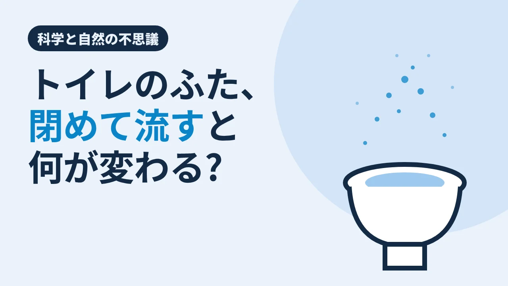

CLEAN CARE JOURNAL / 科学と自然の不思議
トイレのふた、閉めて流すと
何が変わる?

トイレの水を流すとき、ふたを閉めていますか? 閉める人、閉めない人、そもそもふたのない公共のトイレ。毎日何度もしている動作なのに、流した瞬間に便器の上で何が起きているかを見た人は、ほとんどいません。見えないからです。そこで、レーザーで見えるようにした研究者たちがいました。
8 秒で、1.5 メートル
2022 年 12 月、米コロラド大学ボルダー校の研究チームが、科学誌 Scientific Reports に論文を発表しました。使ったのは、北米の公共トイレによくある、ふたのない便器です。壁の後ろから水を勢いよく流すタイプで、新品のきれいな便器に、水道水だけを入れて流しました。
便器の上にレーザーを当て、高感度のカメラで撮ると、流した瞬間、細かな飛沫が噴き上がる様子が写りました。大学の発表によると、飛沫は秒速約 2 メートルで上がり、8 秒以内に便器の上 1.5 メートルの高さまで届きました。
大きな粒は落ち、小さな粒は漂う
飛沫には大小があります。発表によれば、大きな粒は数秒のうちに周りの表面へ落ち、5 マイクロメートルより小さな粒は、数分以上、空中を漂うことがあるとされます。
ただし、この実験には条件があります。便器に入れたのは水道水だけで、排泄物やトイレットペーパーは入っていません。個室の壁も、動く人もいない状態でした。研究者は、実際の条件では状況が悪くなりうるとしています。一方で、同じ発表は、新型コロナウイルスがトイレの飛沫で効率よく広がるという決定的な証拠は、現時点ではないとも書いています。見えたのは「飛沫が上がる」ことで、「それで病気がうつる」ことまでではありません。
どんでん返し:ふたを閉めても、床と便座は
なら、ふたを閉めれば解決。そう考えたくなります。ところが 2024 年 1 月、米アリゾナ大学などのチームが American Journal of Infection Control に発表した研究は、少し違う結果を示しました。
チームは、人に病気を起こさないウイルスを代わりに使い、便器に入れて流したあと、便座・床・壁などから試料を取りました。家庭用のトイレで比べると、ふたを開けて流しても閉めて流しても、便器や周りの床で見つかったウイルスの量に、統計的な差はありませんでした。いちばん汚れていたのは便座で、壁はどちらでも少なめ。ふたを閉めると、飛沫の流れる向きが変わり、便器の前と左側の床がより汚れる、という結果も出ています。
同じ研究では、ブラシだけの掃除ではかなりの汚れが残り、消毒剤とブラシを一緒に使うと、便器の中のウイルスが大きく減りました。研究には消毒剤メーカーの研究者も加わっています。ふたは「意味がない」というより、ふたを閉めるだけでは便座と床までは守りきれない、と読むのが近いのかもしれません。
結び:見えない噴水のあとで
流すたびに、便器の上では小さな噴水が上がっている。ふたを閉めれば少しは向きが変わるけれど、便座や床に届くものはある。だから最後に残るのは、地味な結論です。よく触れる所と、粒が落ちる所を、決まった順番で拭いておくこと。
現場では
介護施設やクリニックのトイレは、一日に何十回も流され、体力の落ちた方や職員さんが何度も出入りする場所です。今回の研究から言えるのは、便座と、便器の前の床が汚れやすい場所の候補だということ。例えば、拭く順番の中で便座と便器まわりの床をどこに置くか、消毒剤を使うかどうかと何を使うかは、施設の感染対策のルールに合わせて決めます。トイレ用の道具を居室に持ち込まない、という基本は、いいトイレの日の読みものにも書きました(介護施設の清掃・クリニックの清掃)。
今日の持ち帰り
- ふたのない公共トイレ型の便器で水道水を流すと、細かな飛沫が 8 秒以内に 1.5 メートルの高さまで上がった(コロラド大学、2022 年)。
- 家庭用トイレの実験では、ふたを閉めて流しても、便器や床のウイルスの量に統計的な差は出なかった。いちばん汚れていたのは便座(アリゾナ大学など、2024 年)。
- ふたを閉めるだけでは便座と床までは守りきれない。拭く順番と消毒の方法は、施設のルールに合わせて決める。
出典:コロラド大学ボルダー校「CU scientists shine a light on what comes up when you flush」(2022 年 12 月 8 日)(Scientific Reports 掲載、ふたのない公共トイレ型、水道水、レーザー 2 本と粒子計数器、秒速 2 m・8 秒以内に 1.5 m、5 マイクロメートル未満は数分以上浮遊、排泄物なし・人なしの条件、新型コロナの広がりの決定的な証拠はない)／APIC(米国感染管理疫学専門家協会)の発表(2024 年 1 月 25 日)(American Journal of Infection Control 掲載の Goforth ほか、アリゾナ大学と Reckitt Benckiser 社、代わりのウイルス、家庭用トイレでふたの開閉で便器・床のウイルス量に統計的な差なし、便座が最も汚染、ふたを閉めると前と左の床が多い、ブラシだけでは汚れが残る、消毒剤とブラシで大きく減少)。論文の本文は未読で、上の大学・学会の発表による。2026 年 11 月 11 日閲覧。